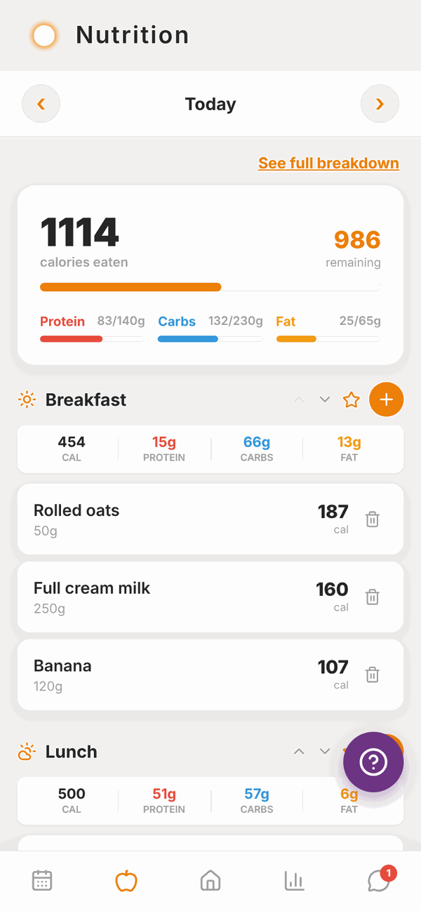

Totality for clients
Using Totality Nutrition too
How Totality Nutrition, the separate food tracking app, links with your Totality account.
Totality Nutrition is a separate app from the same team, just for tracking food. It has a blue icon. You don't need it: everything on the Nutrition pages of this guide works inside Totality.
Some people like Nutrition as well, for its extra food features. If you try it, here's how the two fit together.

Your Totality login works in Nutrition#
You don't need a new account. Log in to Totality Nutrition with the same email and password you use for Totality.
- Get Totality Nutrition from Google Play, or open totalitynutrition.com.au in any browser (including on iPhone).
- Tap to log in, and use your Totality email and password.
- The first time, Nutrition asks its own short set of setup questions.
If you forget your password, resetting it in either app changes it for both.
What's shared between the two apps#
When you use the same account, these are shared. Log in one app and it shows in the other:
- Your food log (every food and meal).
- Your saved meals.
- Your water, and your daily water target.
- Your nutrition targets.
Your trainer sees food you log in either app.
What's different#
- Totality Nutrition has its own Free and paid plans. Your Totality client account is free, but it doesn't include a paid Nutrition plan. Nutrition's free plan covers the basics.
- Your training, check-ins, bookings, messages and payments are only in Totality, not in Nutrition.
- Some Totality customers get 50% off the paid Nutrition plan when they buy on Android or the web. If you qualify, the lower price shows at checkout. The discount doesn't apply to Apple billing.
For everything about Nutrition itself, see the Totality Nutrition guide.
Questions#
Do I need Totality Nutrition?
No. Totality already has a food log, barcode scanning, Tell Tali, saved meals and water. Nutrition is optional.
Will I be charged for Totality Nutrition?
Only if you choose a paid Nutrition plan. Nutrition has a free plan. Your gym or trainer doesn't pay for Nutrition for you.
I logged food in Nutrition but my trainer can't see it.
Check you logged in to Nutrition with exactly the same email you use for Totality. A different email is a different account.
My targets changed after I set up Nutrition.
Nutrition's setup saves new targets, which replace the old ones in both apps. Ask your trainer to set them again in Totality.
Can I delete my Nutrition account but keep Totality?
It's one account for both apps. Deleting your account in either app deletes it everywhere, including your Totality training history. Email admintotality@gmail.com if you're not sure.